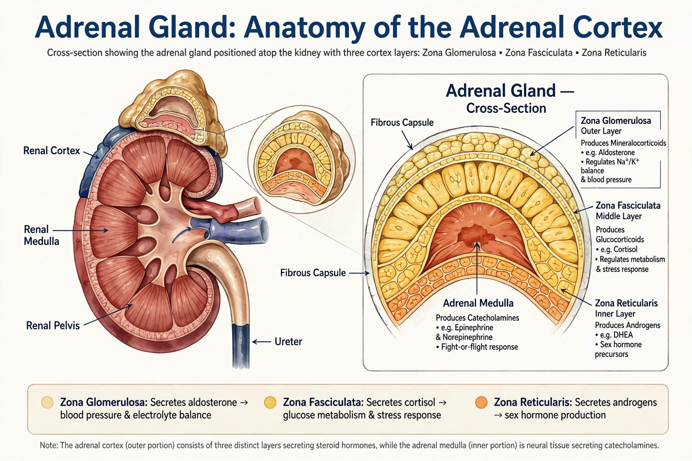

The adrenal cortex is the outer region of the adrenal gland, which sits atop each kidney. It synthesises and secretes steroid hormones — corticosteroids and androgens — from cholesterol, and is essential to life.

Adrenal cortexThe zona glomerulosa produces the mineralocorticoid aldosterone, regulating salt and water balance. The zona fasciculata produces the glucocorticoid cortisol under control of ACTH from the pituitary. The zona reticularis produces weak androgens such as DHEA.
Underproduction causes Addison disease; overproduction of cortisol causes Cushing syndrome, and excess aldosterone causes primary aldosteronism (Conn syndrome). Congenital adrenal hyperplasia is an inherited disorder of cortisol synthesis.